Inhalt Index DeskTop Bronstein

 Numerische Mathematik Approximation, Ausgleichsrechnung, Harmonische Analyse Approximation im Mittel
Numerische Mathematik Approximation, Ausgleichsrechnung, Harmonische Analyse Approximation im Mittel


Eine Funktion f(x) ist über dem Intervall [a,b] durch eine Funktion g(x) in dem Sinne zu approximieren, daß der Ausdruck
minimal wird, und zwar in Abhängigkeit von den Parametern, die die Funktion g(x) enthält. Mit 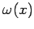 ist eine gegebene Gewichtsfunktion bezeichnet, für die 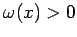 im Integrationsintervall gelten soll.
Macht man für die Näherungsfunktion g(x) den Ansatz
mit geeigneten, linear unabhängigen Funktionen 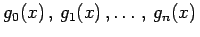, dann führen die notwendigen Bedingungen
| 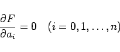 | (19.168) |
für ein relatives Minimum von (19.166) auf das sogenannte Normalgleichungssystem
zur Bestimmung der Ansatzkoeffizienten 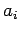. Dabei werden die Abkürzungen
und
| 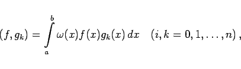 | (19.170b) |
die auch als Skalarprodukte der betreffenden zwei Funktionen bezeichnet werden, verwendet.
Das System der Normalgleichungen ist eindeutig lösbar, da für die Ansatzfunktionen 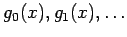, gn(x) lineare Unabhängigkeit vorausgesetzt war. Die Koeffizientenmatrix des Systems (19.169) ist symmetrisch, so daß zur Lösung das CHOLESKY-Verfahren verwendet werden sollte.
Die Ansatzkoeffizienten ai können direkt berechnet werden, ohne Lösung eines Gleichungssystems, wenn das System der Ansatzfunktionen orthogonal ist, d.h. wenn gilt:
| 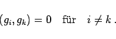 | (19.171) |
Darüber hinaus spricht man von einem orthonormierten System, wenn gilt:
Mit (19.172) vereinfachen sich die Normalgleichungen (19.169) zu
| 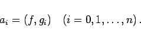 | (19.173) |
Linear unabhängige Funktionensysteme können orthogonalisiert werden. Aus den Potenzfunktionen 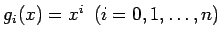 erhält man je nach Wahl der Gewichtsfunktion und des Integrationsintervalls die folgenden Orthogonalpolynome:
| 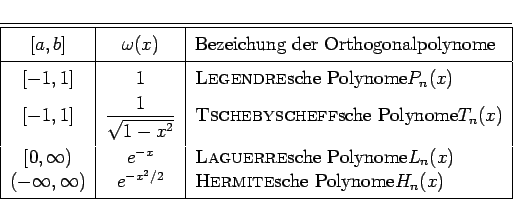 | (19.174) |
Mit dieser Auswahl können die wichtigsten Anwendungsfälle berücksichtigt werden:
| 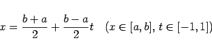 | (19.175) |
auf das Intervall 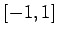, für das viele Ansatzfunktionen definiert sind, transformiert werden kann.